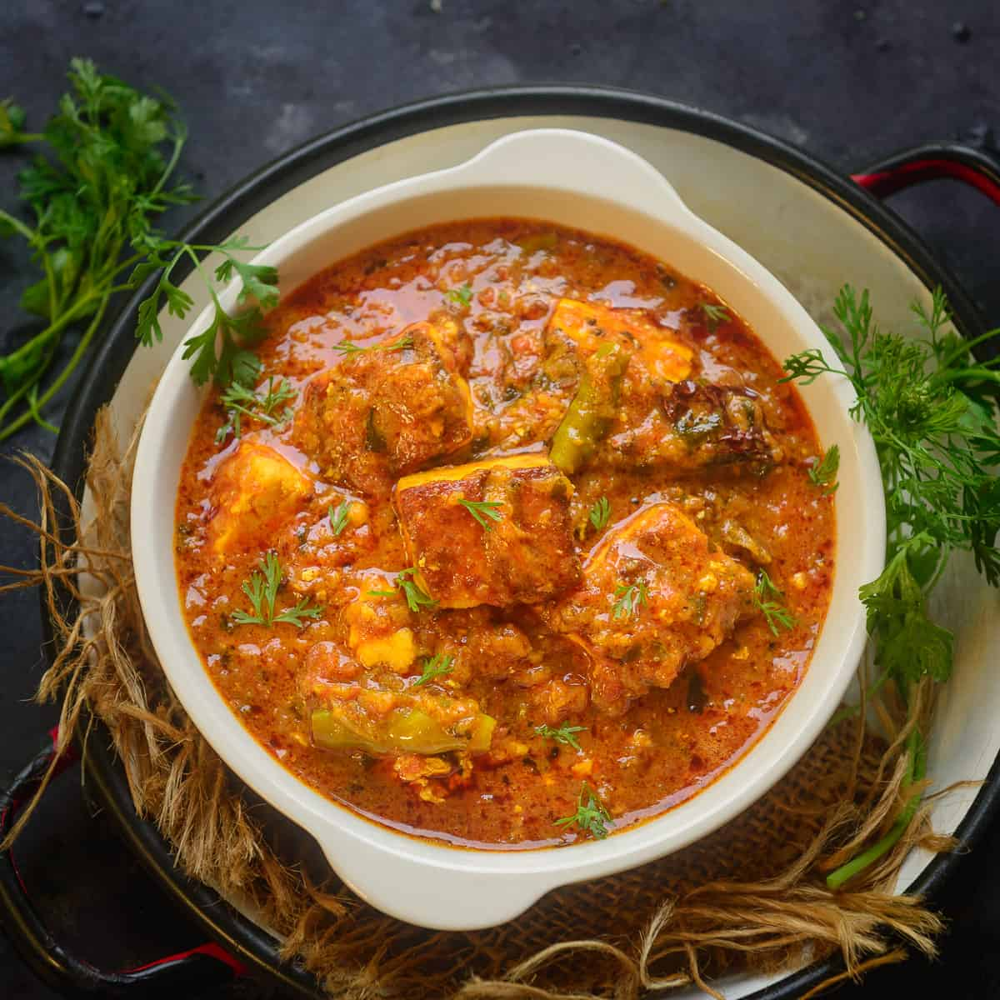

Paneer Masala

Paneer Masala is a delicious indian curry dish made with paneer, onions, tomatoes, cashews and butter.
It's rich without being overbearing, smooth without lacking texture, and can be made as spicy as the
person making it wants.
Ingredients:
- 2 teaspoons oil
- 1/ cinnamon stick
- 1 bay leaf
- 7 cloves of garlic, roughly chopped
- 1 large onion, roughly chopped
- 3-4 tomatoes, roghly chopped
- 10-15 raw cashews
- 1 cup water
- 2 tabples spoons of butter
- 1/2 teaspoon of red chili powder
- 1/2 teaspoon of garam masala
- 1/4 teaspoon cardamom powder
- 1 teaspoon sugar
- 3/4 teaspoon salt
- 1/2 tablespoom tomato paste
- 4 tablespoons cream
- 250 grams paneer
- chopped cilantro
Steps
- Heat 1 teaspoon of oil in a pan on medium heat. Once the oil is
hot, add the bay leaf, cinnamon stick, cloves and saute for few
seconds.
- Then add the the onion, garlic, ginger and saute for 2 to 3 minutes
until the onion is translucent.
- Add the tomatoes and cashews and mix. Then add 1 cup of water. Cover
the pan and cook on medium heat for 15 minutes
- After 15 minutes, remove the pan from heat. Remove the bay leaf,
cinnamon stick and cloves.
- Let the mixture cool down a bit and then transfer to a blender. It’s
important to let it cool down a bit else it will all blow up from the mixer.
Grind the masala to a smooth paste and set aside.
- To the same pan now add 2 tablespoons butter along with remaining 1
teaspoon oil on medium heat.
- Once the butter melts, add the red chili powder and the Kashmiri red chili
powder and fry for few seconds. This will give the curry a nice orange-red color.
- Then add the ground paste back into the pan along with the garam masala
(start with 1/2 teaspoon and add the remaining 1/4 teaspoon at the end only if you
feel like the curry needs that extra bit of garam masala), cardamom powder, sugar,
salt and tomato paste (if using). Mix well and cook for 1-2 minutes.
- Then add the cream and mix.
- Add in the paneer and cook for 2 to 3 minutes on medium heat. Finally add crushed
kasuri methi.
- Garnish paneer butter masala with cilantro and serve hot with naan or rice!
Main page